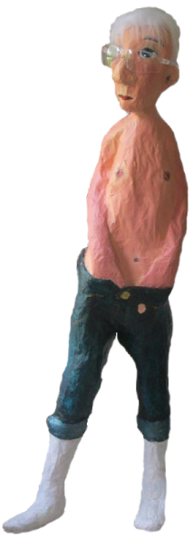
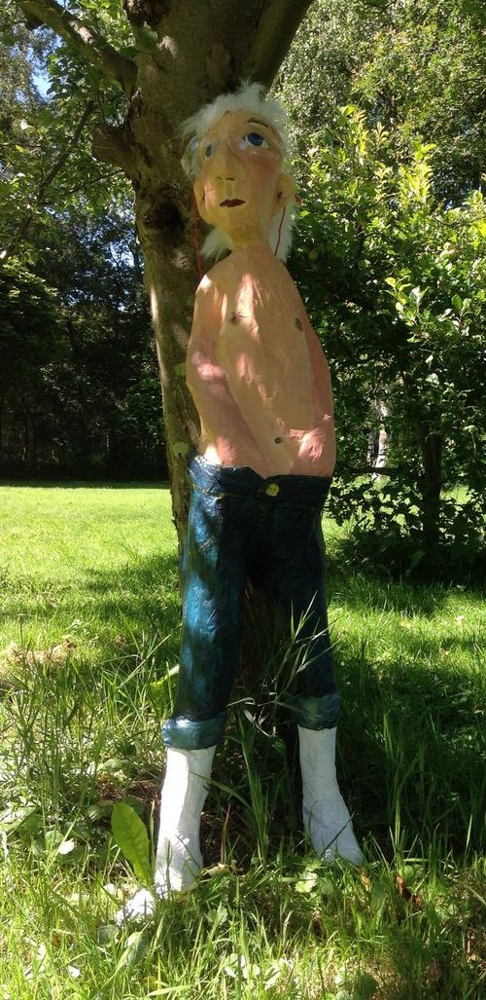
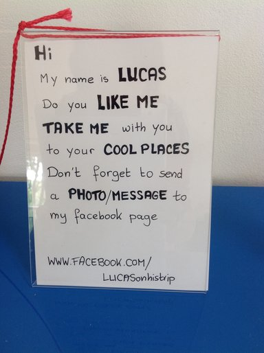
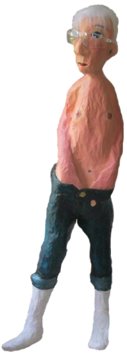
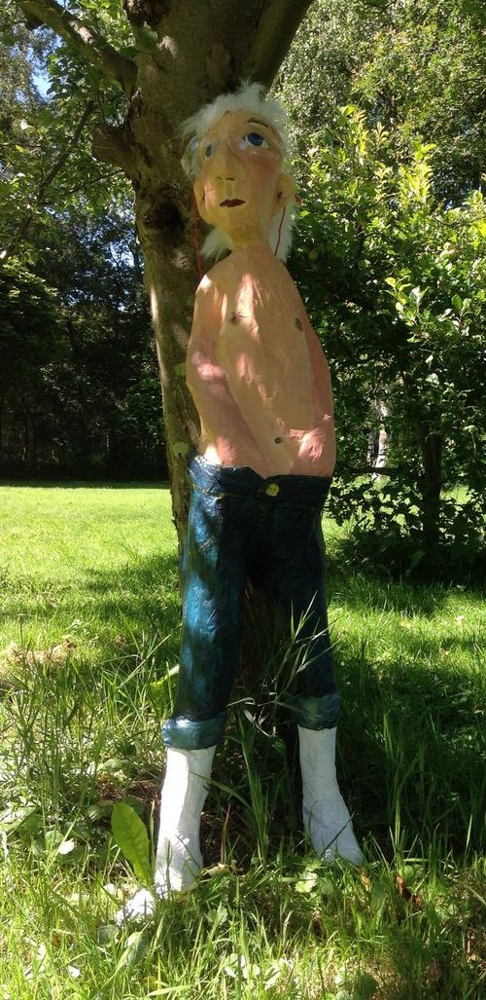
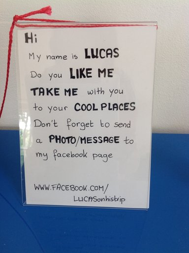

LucasLucas is a lazy lad, who likes to hang out anywhere. If you see him and you like him, take him with you and post a message on his Facebook page Lucas started is trip in Nijemirdum. He is thinking about all the cool places he will visit in the nearby future: Sneek, Amsterdam, London … His facebook page: http://www.facebook.com/LucasOnHisTrip
|
|
|
Let me know where Lucas is hanging out. If Lucas is broken or damaged, please let Lucas return to his maker | |
at
Makerversity t/a Ria Stroes Marineterrein Kattenburgerstraat 5 1018 JA Amsterdam Netherlands |
or to
Ria Stroes De Hege Bouwen 37 8566 JB Nijemirdum Netherlands |
His Trip | |
|
started on: - 15 july Nijemirdum, Netherlands - 18 july Sneek, Meeuwenlaan 8, Netherlands - 25 july Oudemirdum, at Boerderij Kleurrijk, Netherlands - 18 august Sneek, De Wiekslag 100-1, Netherlands - 21 august Amsterdam, Keizersgracht, Netherlands - 11 september Aarschot, Bookmarket, Belgium - ... where is Lucas? | |